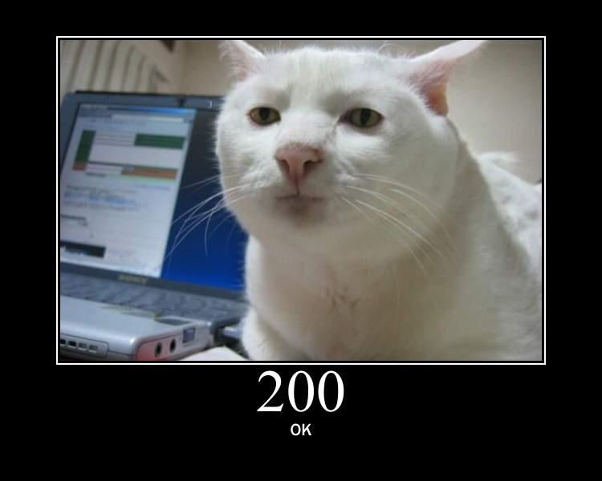

Is Your App Ok Right now?
(Press Spacebar to move to next slide)
Is the database all right?
Redis too?
Solr is performing well?
Background jobs processing?
Relax
Everything is probably ok
Server status says so, right?
How Server Status works today
Hello, app!
How are things?
GET /system-status
Everything is fine
Everything is not fine!

Wake Up All the People!
How long have things been trending badly?
About 3 days
Apps make their own decision if things are bad
Everything is awesome or awful
How System Checks Could Work
Hello, app!
How are things?
GET /system-status
Let me tell you everything
{
"git": {
"revision": "9c2a82a968bfc62d8d5c9fb5a947ec58a43f1560",
"tag": "deploy",
"branch": "master",
"updated_at": "2013-02-14T10:39:31-08:00",
"errors": []
},
"resque": {
"last_restart": "2013-02-14T10:39:31-08:00",
"failed_jobs": 0,
"pending_jobs": 100,
"errors": []
}
}Relationships are based on communication
Let external systems look out for your app
Ollie
A Framework for better system reporting
Sleep better at night knowing your app is ok
What Ollie is
Adding Ollie to Your app
gem 'ollie', git: 'git@github.com:modcloth/ollie.git'
Add ollie and a library of checks
gem 'ollie-modcloth-checks', git: 'git@github.com:modcloth/ollie-modcloth-checks.git'Add a route for server-status
class StatusController < ActionController::Base
include Ollie::Controller
endPersona::Application.routes.draw do
get 'server-status', to: 'status#server_status'
#...
endAdd the systems you'd like to check
class StatusController < ActionController::Base
include Ollie::Controller
report_on :git, :redis
endWriting a new ollie check
Define a new check category
module Ollie
class StatusLogger < Ollie::Base
end
endDeclare individual checks
module Ollie
class StatusLogger < Ollie::Base
metric :file_size
end
endFill in the Details
module Ollie
class StatusLogger < Ollie::Base
metric :file_size
def file_size
File.size("status.log")
end
end
endContributing
- Contribute Checks to ModCloth's library
- Contribute to the Core library